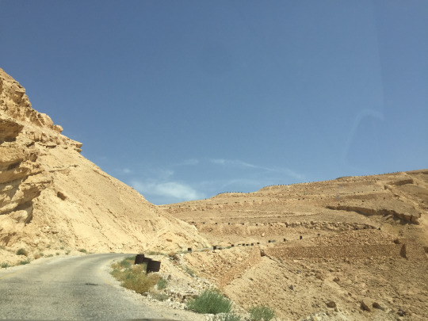
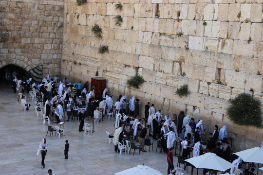
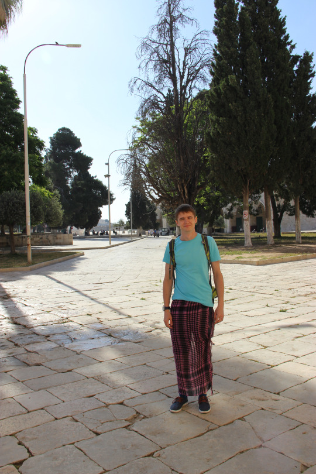
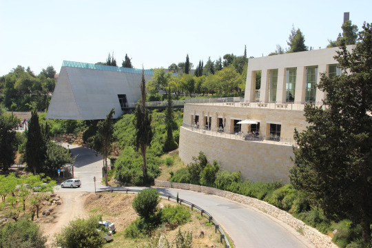
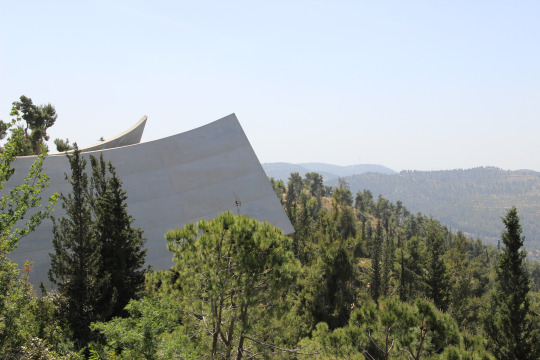
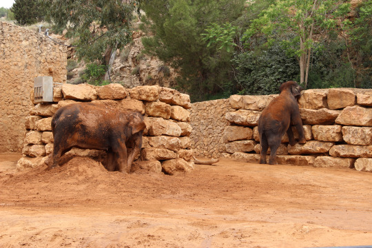

В день отъезда из Эйлата закончилась Пасха и мы наконец нашли заведение с круассанами. Насколько я понял, в Пасху их просто не делают, а Катя мечтала о них с самого приезда. Заказали сразу 5 штук, съели по одному, остальные пришлось упаковать с собой.
По пути в Иерусалим, на одном из отрезков навигатор решил провезти нас по просёлочной дороге, хотя я так и не понял, зачем он это сделал. Наверное для поддержания духа приключений. В общем, дорога представляла собой довольно крутой серпантин, вместо отбойников на обочине стояли металлические бочки. По состоянию покрытия дорога мне показалась кусочком России в Израиле.

Последним приключением было найти парковку Hertz в Иерусалиме. Она располагалась напротив дома с адресом, указанным в документах и с дороги не было видно табличку. Круга с третьего нашли представителя компании и она показала нам дорогу. Сдали машину, заселились и отправились гулять по городу.
В Иерусалиме, в отличие от других городов, было много полицейских и военных с оружием. Вероятно, такое впечатление сложилось из-за того, что мы жили недалеко от Старого города.
Из прогулок по старому городу мне запомнились две истории:
Первая: я перепутал восток с западом и мы пошли смотреть знаменитую восточную (на самом деле западную) стену, которая ещё называется стеной плача. Дошли до проходной с двум полицейскими, перед нами, показав документы, прошли два паренька. Один из полицейских поинтересовался куда мы идём и я объяснил, что к восточной стене. Он тут же меня поправил, что нам нужно к западной стене. Я подумал, что он что-то перепутал и стал убеждать, что нам малоинтересна восточная стена. Спустя время, терпеливый полицейский всё же объяснил, что стена плача западная, а в мусульманском квартале нам делать нечего.

Вторая: после созерцания западной стены, поднялись к Куполу скалы и на входе один из парней сказал: “В шортах здесь ходить нельзя”. Я было решил вернуться, но он добавил: “Пошли!”. Шёл передо мной как гангстер, который хочет сбыть товар, но в итоге привёл к другому человеку, а тот отвёл к сумке с шарфами по 20 шекелей, которыми можно прикрыть ноги.

В Иерусалиме отправляли друзьям открытки. Зашли на почту чтобы купить марки и обрадовались, увидев автомат по их продаже. Но повозившись с ним пару минут поняли, что он не исправен, за это время он успел поглотить часть наших шекелей. Хорошо, что он напечатал чек, который можно показать оператору и он возместит потери. Хорошая новость в том, что у оператора марки суммарно стоили дешевле, чем в автомате.
Во второй день мы посетили Яд ва-Шем (музей памяти жертвам Холокоста). Экспозиции там сильные, но окружение давит эмоционально. Местами, почему-то напомнило музей современного искусства в Барселоне. Фотографировать внутри запрещено, но побывать там определённо стоит.
 
По пути туда и обратно как раз опробовали Иерусалимский скоростной трамвай.
На другой день посетили Иерусалимский зоопарк. Он довольно велик и бродили мы по нему несколько часов точно. Больше всего запомнились гамадрилы, которые очень долго сидели и смотрели на ручей.
Также семья шимпанзе с детёнышем, он всё время резвился и донимал отца с матерью.
И семья слонов: отец рыскал хоботом за забором, мать обсыпалась глиной, а ребёнок в это время купался в водоёме.

Обратный путь из зоопарка был нелёгким. Автобусы останавливаются на кольце и неочевидно на какой остановке нужно сесть, чтобы поехать в нужном направлении. Мы посмотрели, что на табло написана конечная станция куда нам нужно прибыть и сели в автобус, но по карте со временем я заметил, что мы отдаляемся от нашей цели. В итоге, водитель увидел наше негодование и посоветовал перейти дорогу и сесть на автобус в обратном направлении. Конечно же наши билеты уже не действовали и пришлось заплатить ещё раз.
Стоит отметить, что во всех популярных местах вроде Стены плача, почты, зоопарка, супермаркетов стоит охрана, которая производит досмотр личных вещей. Причём сумки и рюкзаки, как правило досматривают вручную. Временами такой подход немного действовал на нервы.